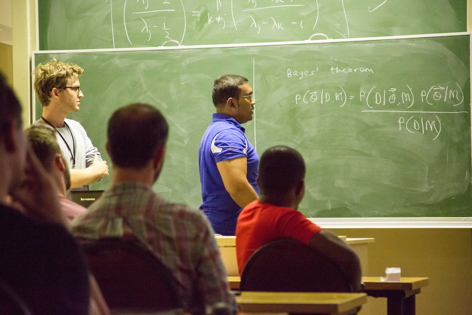

Research
- 
- InScida workshop organised at AIMS, Muizenburg
My current research is focused on building emulators for weak lensing. Traditional Markov Chain Monte Carlo (MCMC) methods require many forward simulations, which are generally expensive to compute, in order to obtain reliable posterior densities of not only cosmological parameters but also systematic parameters. While neural networks have been explored in the earlier days, my main focus has been on Gaussian Processes, which allow for the full propagation of the uncertainty throughout the likelihood analysis. In addition, I have also been working on the MOPED (Heavens et al. 2000) compression algorithm to show that we can use the Gaussian Process emulator combined to recover the full posterior distribution of cosmological and nuisance parameters.
On a separate note, I am also interested in Machine Learning and Deep Learning (from a probabilistic perspective). I believe uncertainty quantification is important and will be a central focus in the next decade of research in Machine Learning. Moreover, while 'curve-fitting' techniques have been very successful over the past two decades, there is still the requirement to understand and interpret these algorithms.
Publications
Below is an updated list of publications in which I was involved:
-
Comparing Multi-class, Binary and Hierarchical Machine Learning Classification schemes for variable stars
Zafiirah Hosenie, Robert Lyon, Benjamin Stappers, Arrykrishna Mootoovaloo
arXiv:1907.08189 -
Marginal Likelihoods from Monte Carlo Markov Chains
Alan Heavens, Yabebal Fantaye, Arrykrishna Mootoovaloo, Hans Eggers, Zafiirah Hosenie, Steve Kroon, Elena Sellentin
arXiv:1704.03472 -
No evidence for extensions to the standard cosmological model
Alan Heavens, Yabebal Fantaye, Elena Sellentin, Hans Eggers, Zafiirah Hosenie, Steve Kroon, Arrykrishna Mootoovaloo
arXiv:1704.03467 -
Bayes Factors via Savage-Dickey Supermodels
Arrykrishna Mootoovaloo, Bruce A. Bassett, Martin Kunz
arXiv:1609.02186
Upcoming synoptic surveys are set to generate an unprecedented amount of data. This requires an automatic framework that can quickly and efficiently provide classification labels for several new object classification challenges. Using data describing 11 types of variable stars from the Catalina Real-Time Transient Surveys (CRTS), we illustrate how to capture the most important information from computed features and describe detailed methods of how to robustly use Information Theory for feature selection and evaluation. We apply three Machine Learning (ML) algorithms and demonstrate how to optimize these classifiers via cross-validation techniques. For the CRTS dataset, we find that the Random Forest (RF) classifier performs best in terms of balanced-accuracy and geometric means. We demonstrate substantially improved classification results by converting the multi-class problem into a binary classification task, achieving a balanced-accuracy rate of $\sim$99 per cent for the classification of $\delta$-Scuti and Anomalous Cepheids (ACEP). Additionally, we describe how classification performance can be improved via converting a 'flat-multi-class' problem into a hierarchical taxonomy. We develop a new hierarchical structure and propose a new set of classification features, enabling the accurate identification of subtypes of cepheids, RR Lyrae and eclipsing binary stars in CRTS data.
In this paper, we present a method for computing the marginal likelihood, also known as the model likelihood or Bayesian evidence, from Markov Chain Monte Carlo (MCMC), or other sampled posterior distributions. In order to do this, one needs to be able to estimate the density of points in parameter space, and this can be challenging in high numbers of dimensions. Here we present a Bayesian analysis, where we obtain the posterior for the marginal likelihood, using kth nearest-neighbour distances in parameter space, using the Mahalanobis distance metric, under the assumption that the points in the chain (thinned if required) are independent. We generalise the algorithm to apply to importance-sampled chains, where each point is assigned a weight. We illustrate this with an idealised posterior of known form with an analytic marginal likelihood, and show that for chains of length $∼10^{5}$ points, the technique is effective for parameter spaces with up to ∼20 dimensions. We also argue that $k=1$ is the optimal choice, and discuss failure modes for the algorithm. In a companion paper (Heavens et al. 2017) we apply the technique to the main MCMC chains from the 2015 Planck analysis of cosmic background radiation data, to infer that quantitatively the simplest 6-parameter flat $\Lambda$CDM standard model of cosmology is preferred over all extensions considered.
We compute the Bayesian Evidence for models considered in the main analysis of Planck cosmic microwave background data. By utilising carefully-defined nearest-neighbour distances in parameter space, we reuse the Monte Carlo Markov Chains already produced for parameter inference to compute Bayes factors $B$ for many different model-dataset combinations. Standard 6-parameter flat $\Lambda$CDM model is favoured over all other models considered, with curvature being mildly favoured only when CMB lensing is not included. Many alternative models are strongly disfavoured by the data, including primordial correlated isocurvature models (ln$B$=−7.8), non-zero scalar-to-tensor ratio (ln$B$=−4.3), running of the spectral index (ln$B$=−4.7), curvature (ln$B$=−3.6), non-standard numbers of neutrinos (ln$B$=−3.1), non-standard neutrino masses (ln$B$=−3.2), non-standard lensing potential (ln$B$=−4.6), evolving dark energy (ln$B$=−3.2), sterile neutrinos (ln$B$=−6.9), and extra sterile neutrinos with a non-zero scalar-to-tensor ratio (ln$B$=−10.8). Other models are less strongly disfavoured with respect to flat $\Lambda$CDM. As with all analyses based on Bayesian Evidence, the final numbers depend on the widths of the parameter priors. We adopt the priors used in the Planck analysis, while performing a prior sensitivity analysis. Our quantitative conclusion is that extensions beyond the standard cosmological model are disfavoured by Planck data. Only when newer Hubble constant measurements are included does ΛCDM become disfavoured, and only mildly, compared with a dynamical dark energy model (ln$B\sim$+2).
We outline a new method to compute the Bayes Factor for model selection which bypasses the Bayesian Evidence. Our method combines multiple models into a single, nested, Supermodel using one or more hyperparameters. Since the models are now nested the Bayes Factors between the models can be efficiently computed using the Savage-Dickey Density Ratio (SDDR). In this way model selection becomes a problem of parameter estimation. We consider two ways of constructing the supermodel in detail: one based on combined models, and a second based on combined likelihoods. We report on these two approaches for a Gaussian linear model for which the Bayesian evidence can be calculated analytically and a toy nonlinear problem. Unlike the combined model approach, where a standard Monte Carlo Markov Chain (MCMC) struggles, the combined-likelihood approach fares much better in providing a reliable estimate of the log-Bayes Factor. This scheme potentially opens the way to computationally efficient ways to compute Bayes Factors in high dimensions that exploit the good scaling properties of MCMC, as compared to methods such as nested sampling that fail for high dimensions.